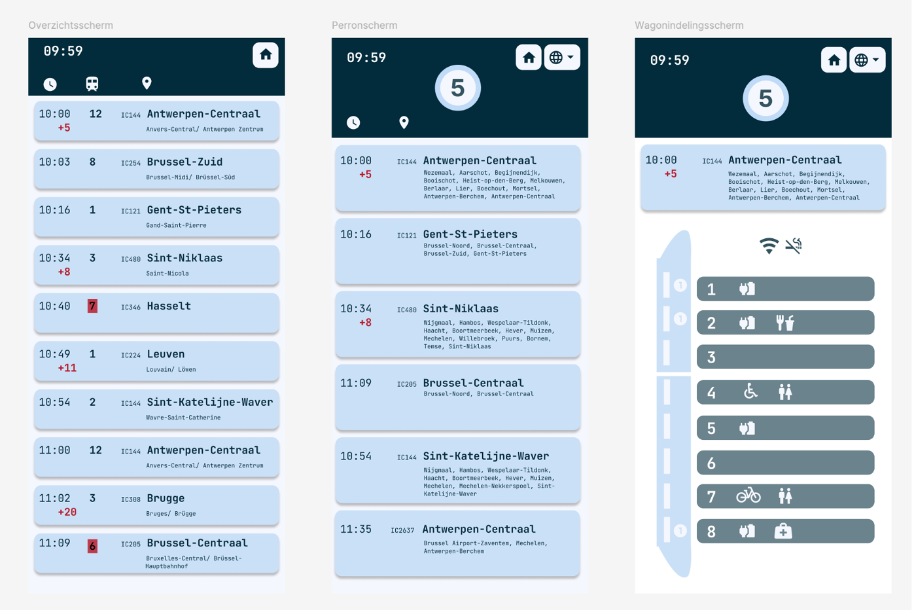

TailwindCSS gebruiken in HTML-code
Deze week hebben we verder uitleg gekregen over Tailwind. Ik ben hiermee aan de slag gegaan en heb mijn HTML-file verder aangepast.Figma – Mobiele schermen
Daarnaast ben ik ook begonnen aan het creëeren van mobiele schermen in Figma. Ik heb mijn initiële treinschermen (overzichtscherm, perronscherm & wagonindelingsscherm) omgezet naar versies voor op een mobiel apparaat. Ik ben begonnen met deze eerst te schetsen op papier. Daarna heb ik het uitgewerkt in Figma. Ik heb rekening gehouden met de design guidelines die we vorige week hebben gekregen.- Dropshadow: dit heb ik enkel gebruikt voor kaders die functioneren als buttons
- Kleuren: ik heb er opgelet om enkel kleur te gebruiken als een bepaalde functie en niet enkel decoratief
- Pictogrammen: ik heb de pictorgrammen en tekst uitgelijnd op elkaar wat voor meer rust in het ontwerp zorgt.
